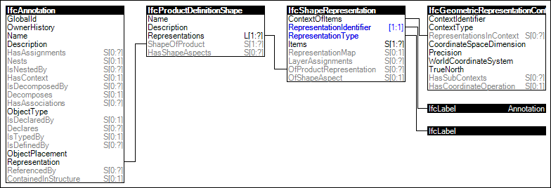

Link to this page
Link to this pageAnnotations may provide an 'Annotation' representation for including points, curves, surfaces, fill areas, and text.
Styled items may provide structure and styles that apply to the representation, a geometric set may provide styles that apply to all items within, and/or items may provide their own styles which override styles defined at the geometric set. Styles and label can also be assigned by presentation layers.
The representation identifier of the annotation representation is:
Figure 61 illustrates an instance diagram.
 |
Figure 61 — Annotation Geometry |